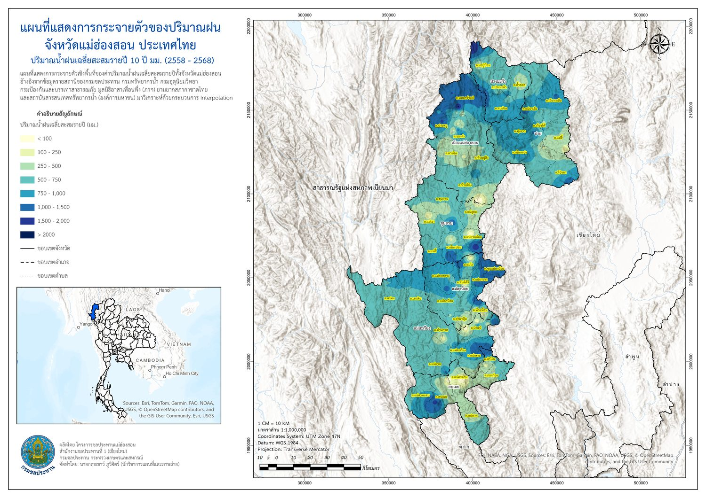
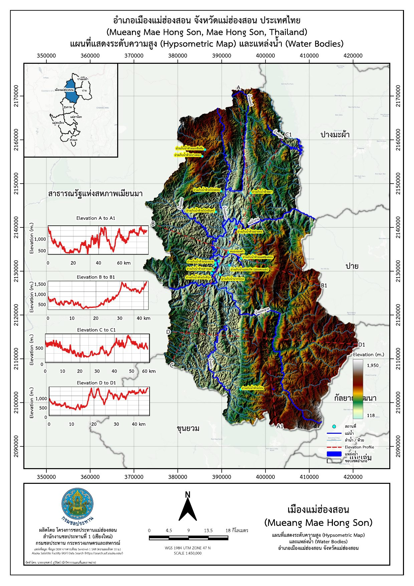
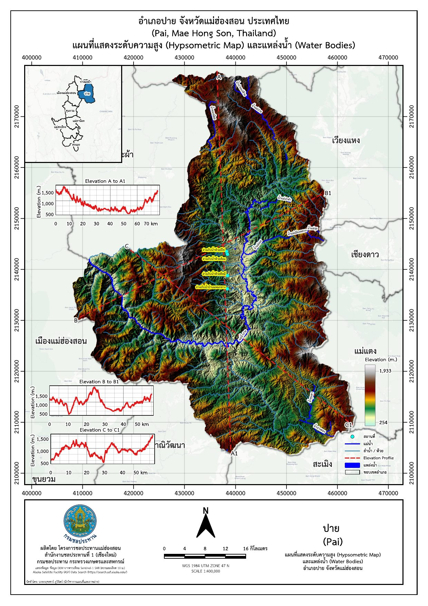
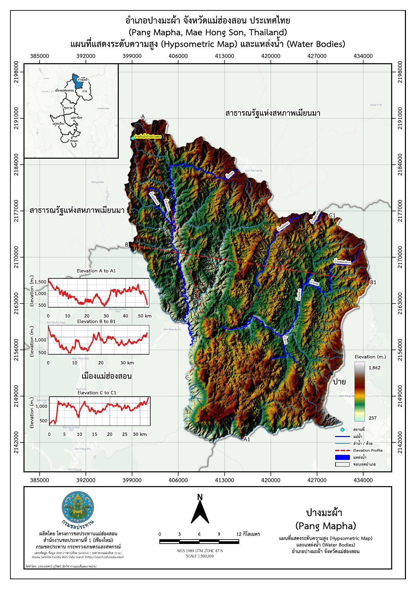
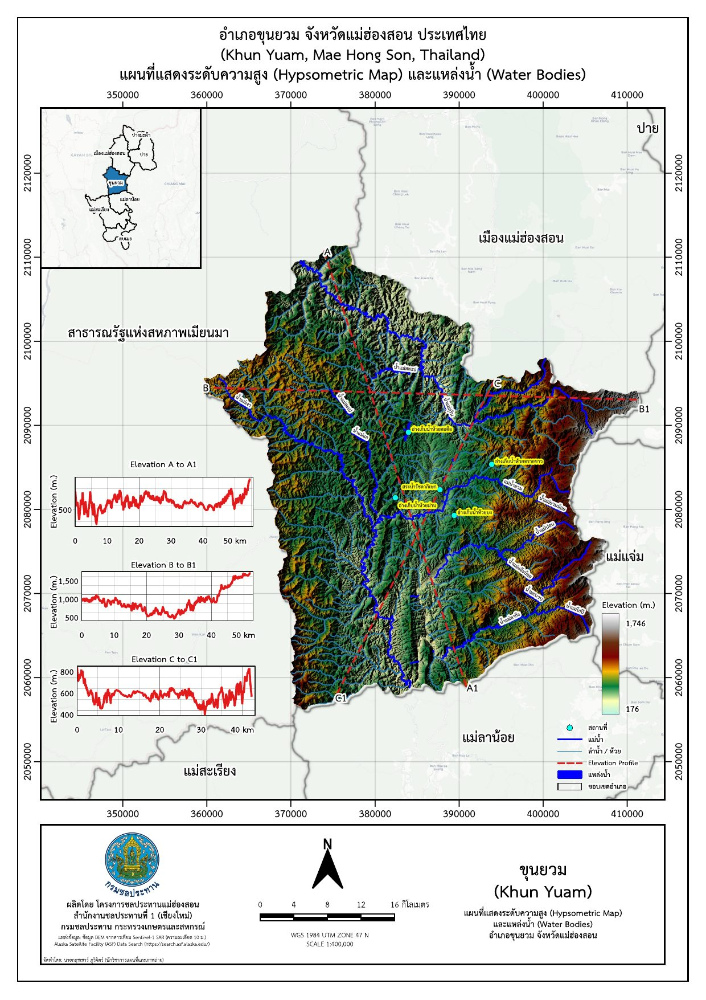
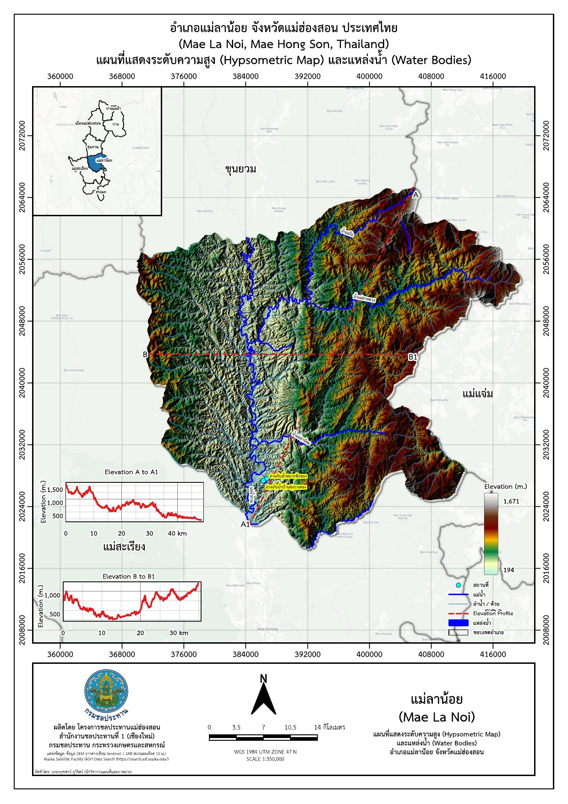
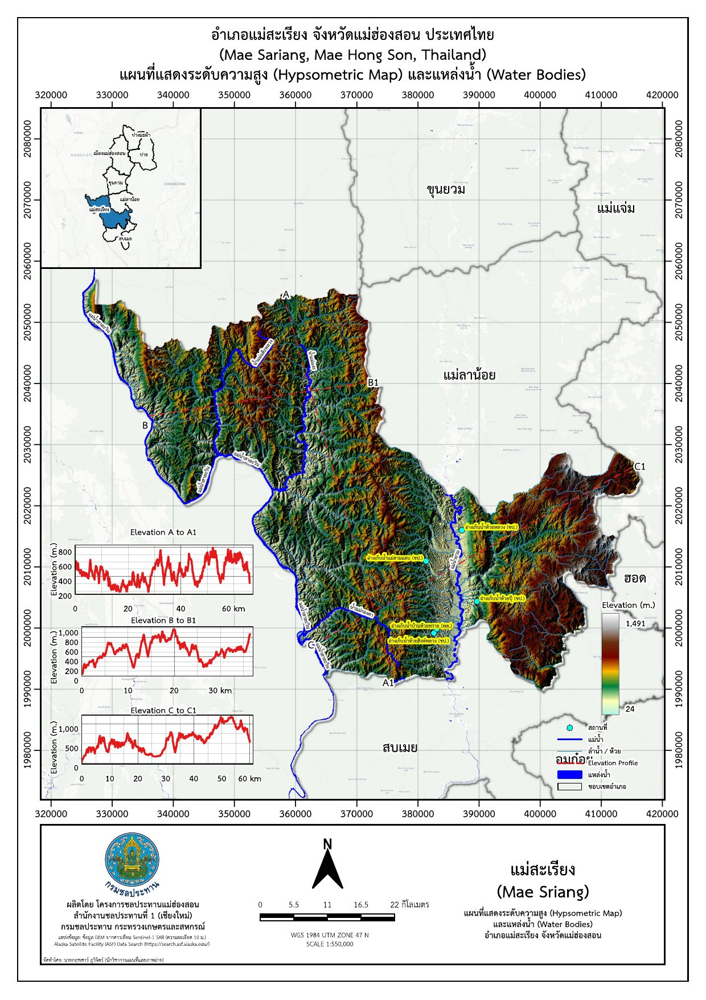
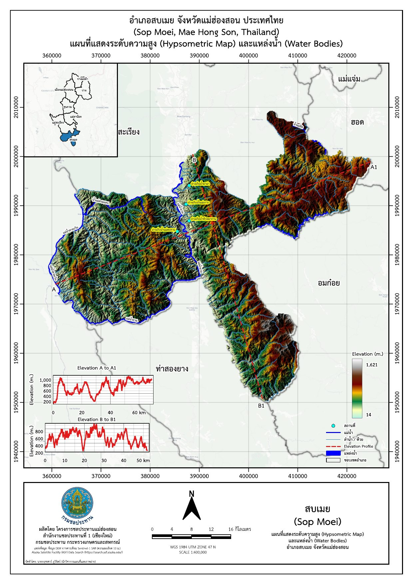

จัดทำแผนที่ระดับความสูงภูมิประเทศ (Hypsometric Map) พร้อมแหล่งน้ำครบทั้ง 7 อำเภอของจังหวัดแม่ฮ่องสอน และแผนที่การกระจายตัวของปริมาณฝนเฉลี่ยสะสมรายปีทั้งจังหวัด เพื่อใช้เป็นข้อมูลพื้นฐานสนับสนุนงานบริหารจัดการน้ำและวางแผนโครงการชลประทาน
จังหวัดแม่ฮ่องสอนมีภูมิประเทศเป็นภูเขาสูงชันสลับซับซ้อน ระดับความสูงและปริมาณฝนแปรผันมากในแต่ละพื้นที่ หน่วยงานจึงจำเป็นต้องมีแผนที่ภูมิประเทศและข้อมูลฝนที่ครอบคลุมทั้งจังหวัดในรูปแบบที่อ่านง่าย ใช้เป็นข้อมูลอ้างอิงเบื้องต้นสำหรับงานสำรวจ วางแผนโครงการชลประทาน และการบริหารจัดการน้ำในภาพรวม โดยไม่ผูกกับการขออนุญาตใช้พื้นที่โครงการใดโครงการหนึ่งโดยเฉพาะ








ชุดแผนที่ที่จัดทำขึ้นใช้เป็นข้อมูลพื้นฐานอ้างอิงสำหรับทีมสำรวจและวางแผนงานชลประทานทั้งจังหวัด ช่วยให้เห็นภาพรวมลักษณะภูมิประเทศ ทิศทางลำน้ำ และแนวโน้มปริมาณฝนในแต่ละพื้นที่ได้อย่างรวดเร็ว โดยไม่ต้องรอข้อมูลเฉพาะโครงการ เหมาะสำหรับการนำเสนอภาพรวมและประกอบการตัดสินใจเบื้องต้นก่อนลงพื้นที่จริง